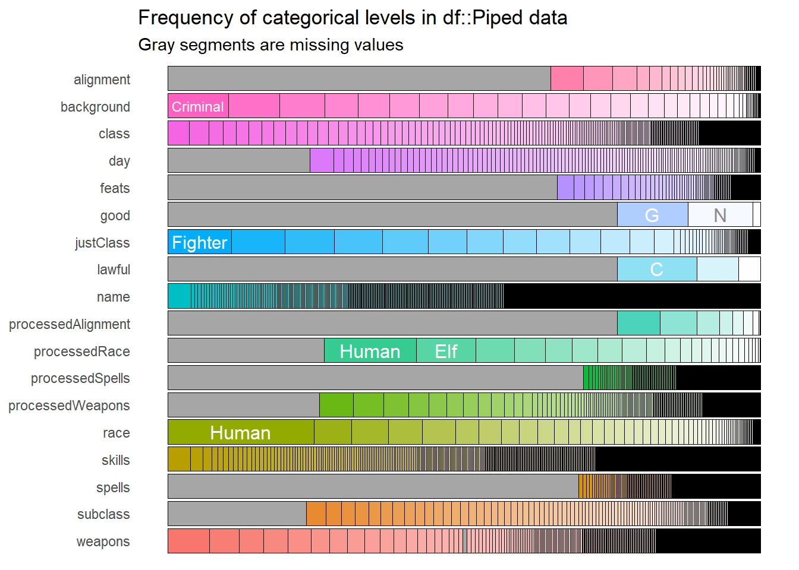
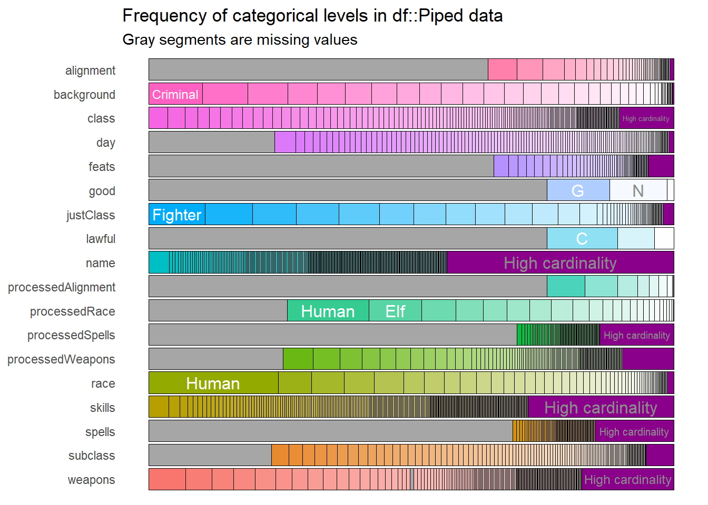
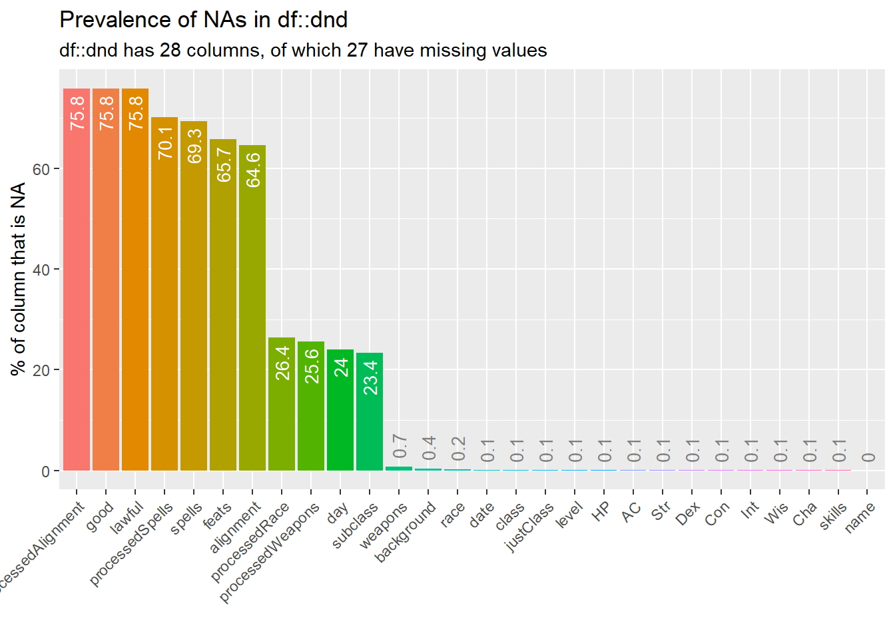
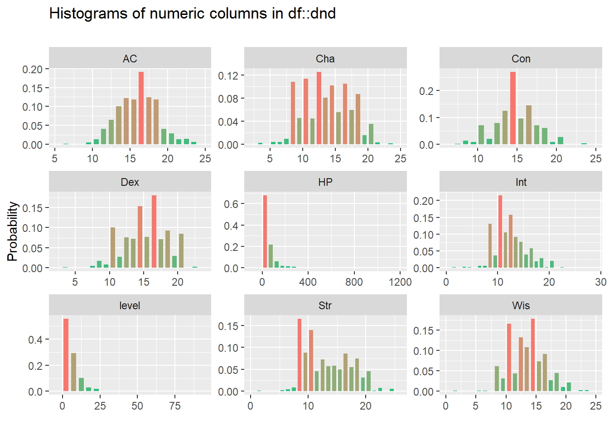
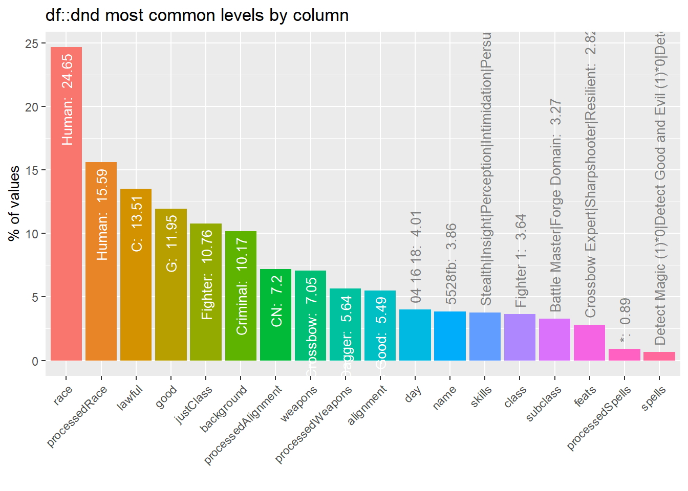
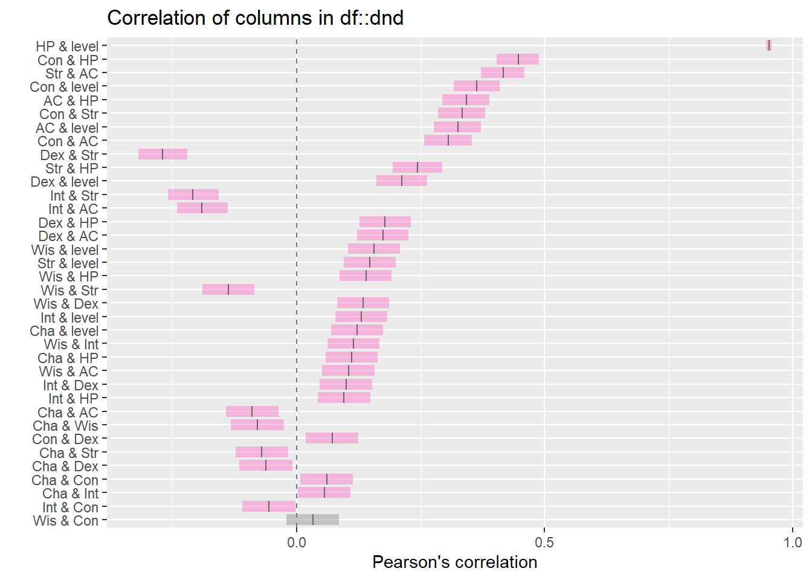

27 de Mayo del 2020 - Jhonatan Montilla
En este apartado se realizará un procedimiento de exploración rápido de los datos contenidos en un dataset especialmente seleccionado para dicho fin, en donde se podrán observar los diferentes tipos de variables para su identificación y cuantificación a través de herramientas que permiten de manera visual realizar análisis. Podrá descargar el conjunto de datos a través del siguiente enlace al repositorio.
library(inspectdf)
library(dplyr)
library(readr)dnd <- read_csv("analisis_exploratorio_dnd.csv")spec(dnd)## cols(
## name = col_character(),
## race = col_character(),
## background = col_character(),
## date = col_datetime(format = ""),
## class = col_character(),
## justClass = col_character(),
## subclass = col_character(),
## level = col_double(),
## feats = col_character(),
## HP = col_double(),
## AC = col_double(),
## Str = col_double(),
## Dex = col_double(),
## Con = col_double(),
## Int = col_double(),
## Wis = col_double(),
## Cha = col_double(),
## alignment = col_character(),
## skills = col_character(),
## weapons = col_character(),
## spells = col_character(),
## day = col_character(),
## processedAlignment = col_character(),
## good = col_character(),
## lawful = col_character(),
## processedRace = col_character(),
## processedSpells = col_character(),
## processedWeapons = col_character()
## )dnd %>% inspect_types()## # A tibble: 3 x 4
## type cnt pcnt col_name
## <chr> <int> <dbl> <named list>
## 1 character 18 64.3 <chr [18]>
## 2 numeric 9 32.1 <chr [9]>
## 3 POSIXct POSIXt 1 3.57 <chr [1]>dnd_cat <- dnd %>% inspect_cat()
dnd_cat## # A tibble: 18 x 5
## col_name cnt common common_pcnt levels
## <chr> <int> <chr> <dbl> <named lis>
## 1 alignment 56 <NA> 64.6 <tibble [5~
## 2 background 42 Criminal 10.2 <tibble [4~
## 3 class 310 Fighter 1 3.64 <tibble [3~
## 4 day 150 <NA> 24.0 <tibble [1~
## 5 feats 127 <NA> 65.7 <tibble [1~
## 6 good 4 <NA> 75.8 <tibble [4~
## 7 justClass 82 Fighter 10.8 <tibble [8~
## 8 lawful 4 <NA> 75.8 <tibble [4~
## 9 name 856 5528fb 3.86 <tibble [8~
## 10 processedAlignment 10 <NA> 75.8 <tibble [1~
## 11 processedRace 25 <NA> 26.4 <tibble [2~
## 12 processedSpells 268 <NA> 70.1 <tibble [2~
## 13 processedWeapons 259 <NA> 25.6 <tibble [2~
## 14 race 75 Human 24.6 <tibble [7~
## 15 skills 636 Stealth|Insight|Perception|~ 3.79 <tibble [6~
## 16 spells 281 <NA> 69.3 <tibble [2~
## 17 subclass 190 <NA> 23.4 <tibble [1~
## 18 weapons 404 Crossbow 7.05 <tibble [4~dnd_cat$levels$lawful## # A tibble: 4 x 3
## value prop cnt
## <chr> <dbl> <int>
## 1 <NA> 0.758 1021
## 2 C 0.135 182
## 3 N 0.0698 94
## 4 L 0.0371 50dnd_cat %>% show_plot()
Algunas variables categóricas parecen tener muchas entradas únicas, es algo completamente normal como por ejemplo una variable de nombres y apellidos, las cuales pueden ser a menudo son únicos en un conjunto de datos. Si ejecutamos el análisis de frecuencias de variables categóricas en un conjunto de datos con millones ó miles de filas, como por ejemplo el gráfico anterior, habrían tantos nombres con frecuencias relativas muy pequeñas que las barras de nombres serían muy difíciles de ver, para evitar esto a través de la función show_plot () con el parámetro de cardinalidad podríamos corregir esto, el gráfico señalará que existe una gran variación de valores en la variable.
dnd_cat %>% show_plot(high_cardinality = 1)
dnd_na <- inspect_na(dnd)
show_plot(dnd_na)
dnd_num <- inspect_num(dnd)
show_plot(dnd_num)
dnd_imb <- inspect_imb(dnd)
show_plot(dnd_imb)## Warning: `guides(<scale> = FALSE)` is deprecated. Please use `guides(<scale> =
## "none")` instead.
dnd_cor <- inspect_cor(dnd)
show_plot(dnd_cor)